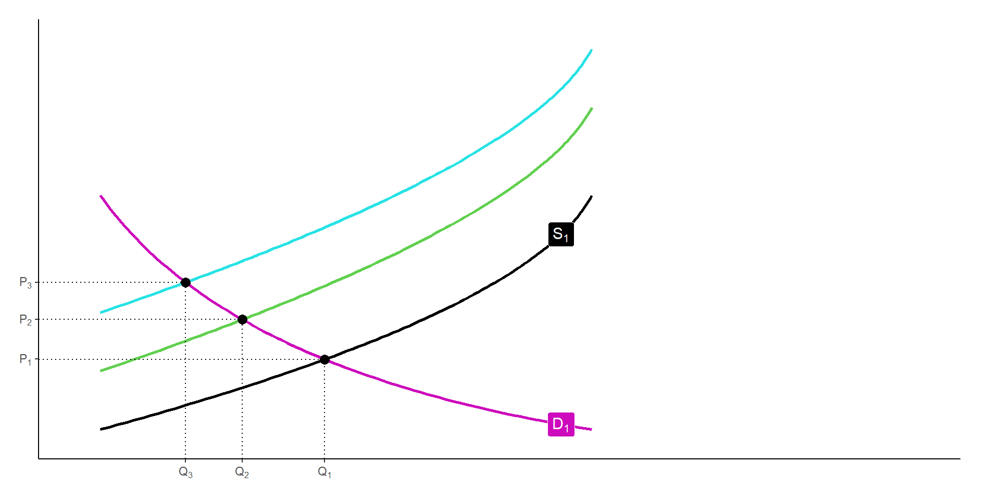

data.ingresos <- read_csv("../files/ingresos_iv.csv",
locale = locale(encoding = "latin1"))
#MCO
mco <- lm(lwage ~ educ + exper + black + south + married + smsa,
data = data.ingresos)
#Variables instrumentales (asume homocedasticidad)
vi <- ivreg(lwage ~ educ + exper + black + south + married + smsa |
. - educ + nearc4, data = data.ingresos)Variables instrumentales
¿Qué sucede si se violan los supuestos de MCO?
Supongamos que el el proceso de salarios verdadero está dado por
\[\ln(w_i)=\beta_0+\beta_1 educ_i+\beta_2 habilidad_i+e_i\]
Y asumamos que la habilidad es no observada y decidimos estimar
\[\ln(w_i)=\beta_0+\beta_1 educ_i+u_i\]
¿Dónde queda la habilidad?
El \(\hat{\beta}_1\) estimado con esta regresión corta es inconsistente porque \(u_i\) incluye la habilidad, que afecta tanto el desempeño en el mercado laboral como el desempeño en la escuela
Instrumentos
Consideremos el siguiente modelo
\[y=\beta_0+\beta_1 x+u\]
donde \(cov(x,u)\neq 0\)
Suponga que existe una varible \(z\) que cumple con:
- Exogeneidad: \(z\) no está correlacionada con \(u\)
\[cov(z,u)=0\]
- Relevancia: \(z\) está correlacionado con \(x\)
\[cov(z,x)\neq 0\]
Entonces \(z\) es un instrumento de \(x\)
La exogeneidad implica que \(z\) no debe estar correlacionado con factores omitidos (por ejemplo, la habilidad)
Estimador de VI
Calculando la covarianza con \(z\) de \(y=\beta_0+\beta_1 x+u\) obtenemos:
\[cov(y,z)=\beta_1 cov(x,z)+cov(u,z)\]
Y, si \(cov(u,z)\), resolviendo para \(\hat{\beta}_1\)
\[\hat{\beta}_1=\frac{cov(y,z)}{cov(x,z)}\]
siempre y cuando \(cov(x,z)\neq 0\)
Por una LGN se puede mostrar que \(\hat{\beta}_1\) es consistente
Sin embargo, como profundizaremos más adelante, \(\hat{\beta}_1\) siempre es sesgagado
El sesgo puede ser sustancial en muestras pequeñas, por lo que se recomienda tener precaución con el tamaño de la muestra
Ejemplo: rendimientos a la educación
Card (1995) estudia el problema de retornos a la educación
Tenemos una muestra de 5,525 hombres de entre 14 y 24 años
Nos interesa la relación entre educación e ingreso, pero sabemos que no observamos la habilidad
Sabemos que si estimamos \(\ln(w_i)=\beta_0+\beta_1 educ_i+u_i\), el coeficiente \(\beta_1\) estará sesgado
Card emplea como instrumento una variable \(z_i\) que indica si en el municipio de la persona \(i\) hay una universidad
La intución es que la presencia de la universidad baja el costo de ir a la universidad, pero esto no afecta directamente el ingreso
Encontrar un instrumento casi nunca es tarea sencilla: se trata de enteder cómo los mecanismos, las instituciones y los contextos
Lenguaje de VI
De forma más general, partimos del la siguiente ecuación estructural para \(y_i\):
\[y_i=\beta_0+\beta_1 x_{1i}+\beta_2 x_{2i}+u_i\]
donde \(cov(x_{1i},u_i)\neq 0\)
A \(x_{1i}\) se le llama la variable endógena
Se incluye también una o más variables exógenas como \(x_{2i}\) que no están correlacionadas con \(u_i\)
A una regresión de la variable de interés en función del instrumento y las variables exógenas se le conoce como forma reducida
\[y_i=\beta_0+\beta_1 z_{1i}+\beta_2 x_{2i}+u_i\]
Primera etapa
La primera etapa especifica la relación entre la variable endógena y el instrumento:
\[x_{1i}=\pi_0+\pi_1 z_i+\pi_2x_{2i}+\nu_i\]
Donde se cumple que \(cov(z_i,\nu_i=0)\) y \(cov(x_{2i},\nu_i)=0\)
Entonces, la condición de relevancia puede escribirse también como \(\pi_1\neq 0\)
Noten que la primera etapa también implica que, descontando el efecto de \(z_i\), todavía \(x_{1i}\) y \(x_{2i}\) están correlacionadas
La primera etapa puede y debe probarse empíricamente
En cambio, no es posible probar la restricción de exclusión, que debe estar respaldada sobre todo por la teoría económica, el conocimiento de las instituciones, la exogeneidad de experimentos naturales, etc.
Más de un instrumento
Es posible que haya \(J\) variables \(z_{ij}\) que puedan funcionar como instrumento
Se debe cumplir que \(cov(u_i,z_{ij})=0\) y que cada una se correlacione con \(x_{i1}\)
Con dos instrumentos, podemos escribir la primera etapa como
\[x_{1i}=\pi_0+\pi_1 z_{1i}+ \pi_2 z_{2i} +\pi_3x_{2i}+\nu_i\]
Ahora, debe cumplirse que \(cov(z_{1i},\nu_i)=cov(z_{2i},\nu_i)=cov(x_{2i},\nu_i)=0\)
Para lograr identificación, se requiere que \(\pi_1\neq 0\) o \(\pi_2\neq 0\)
Podemos usar una prueba \(F\) para probar que \(\pi_1=\pi_2=0\)
Mínimos cuadrados en dos etapas
El modelo presentado anteriormente sugiere que podemos estimar \(\beta_1\) con un procedimiento de dos etapas
Regresión de \(x_{1i}\) sobre los instrumentos y las variables exógenas para obtener \(\hat{x}_{1i}\)
Regresión de \(y_i\) sobre las variables exógenas y \(\hat{x}_{1i}\)
Es como si purgáramos a \(x_{1i}\) de su correlación con \(u_i\)
Nunca hacemos esto a mano
Cuando tenemos tantos instrumentos como endógenas, usamos el estimador de variables instrumentales
Cuando tenemos más instrumentos que endógenas, recurrimos al método generalizado de momentos
Más sobre rendimientos a la educación
En el problema de Card (1995), la primera etapa es
\[esc_i=\pi_0+\pi_1 X_i+ \phi unicerca_i +\nu_i\] donde \(unicerca_i= \begin{cases} 1 \quad\text{había una universidad en el municipio} \\ 0 \quad\text{otro caso}\\ \end{cases}\)
Y la forma reducida es
\[\ln(w_i)=\gamma_0+\gamma_1 X_i+ \delta unicerca_i+\varepsilon_i\]
Sabemos que el salario estará correlacionado con la presencia de la universidad, pero estas diferencias ocurren por la vía de la escolaridad
Ejemplo: Card (1995)
Usamos los datos en ingresos_iv.csv, del estudio de Card que hemos mencionado como ejemplo
La librería AER, que ya hemos usado, tiene la función ivreg
También usaremos una nueva librería, gmm
Estimemos la relación entre el log del salario y la educación
Ejemplo: Card (1995)
Sabemos que \(\beta_1\) estimado por MCO es inconsistente
Ejemplo: Card (1995)
La primera etapa de este ejercicio es
# Primera etapa
pe_vi <- lm(educ ~ nearc4 + exper + black + south + married + smsa,
data = data.ingresos)modelsummary(list("MCO"=mco, "VI"=vi, "Primera etapa"=pe_vi),
coef_map = c("educ", "exper", "nearc4"),
gof_map = c("nobs", "F"))| MCO | VI | Primera etapa | |
|---|---|---|---|
| educ | 0.071 | 0.124 | |
| (0.003) | (0.050) | ||
| exper | 0.034 | 0.056 | -0.404 |
| (0.002) | (0.020) | (0.009) | |
| nearc4 | 0.327 | ||
| (0.082) | |||
| Num.Obs. | 3003 | 3003 | 3003 |
| F | 219.153 | 456.140 |
Ejemplo: Card (1995)
Debemos verificar el estadístico \(F\) de la primera etapa (para los instrumentos)
#F de los instrumentos
linearHypothesis(pe_vi, c("nearc4=0"))Linear hypothesis test
Hypothesis:
nearc4 = 0
Model 1: restricted model
Model 2: educ ~ nearc4 + exper + black + south + married + smsa
Res.Df RSS Df Sum of Sq F Pr(>F)
1 2997 11304
2 2996 11245 1 59.176 15.767 7.334e-05 ***
---
Signif. codes: 0 '***' 0.001 '**' 0.01 '*' 0.05 '.' 0.1 ' ' 1Ejemplo con oferta y demanda
Supongamos que nos interesa estimar la elasticidad del consumo de mantequilla
\[\ln(q_{_i})=\alpha + \beta \ln(p_i) + \varepsilon_i\] Supongamos que tenemos datos del precio y el consumo en una muestra grande de localidades \(i\)
Si estimamos la ecuación anterior por MCO, el coeficiente estimado \(\hat{\beta}\) será inconsistente por un problema de simulateneidad
El precio y la cantidad se determinan en equilibrio por la interacción de la oferta y la demanda
Un choque a la oferta o la demanda afectará tanto la cantidad como el precio de equilibrio
Ejemplo con oferta y demanda
Podemos usar variables instrumentales para estimar la elasticidad de la demanda
Necesitamos una variable \(z\) que afecte solo la oferta, pero que no afecte directamente la demanda
\(z\) puede ser precipitación o temperatura
Al desplazar la oferta, manteniendo la demanda fija, se revela la forma de la curva de demanda
Podemos estimar la elasticidad de la demanda
Ejemplo con oferta y demanda
# Add custom curves
demand1 <- data.frame(Hmisc::bezier(c(1, 3, 9),
c(9, 3, 1)))
supply1 <- data.frame(Hmisc::bezier(c(1, 8, 9),
c(1, 5, 9)))
supply2 <- data.frame(Hmisc::bezier(c(1, 8, 9),
c(3, 8, 12)))
supply3 <- data.frame(Hmisc::bezier(c(1, 8, 9),
c(5, 10, 14))) Ejemplo con oferta y demanda
econocharts::sdcurve(supply1, demand1, supply2, demand1, supply3, demand1,
names = c("S[1]", "D[1]","S[2]", "D[1]", "S[3]", "D[1]"),
xmax = 15, ymax=10)# A tibble: 3 × 2
x y
<dbl> <dbl>
1 4.65 3.40
2 3.31 4.76
3 2.39 6.03